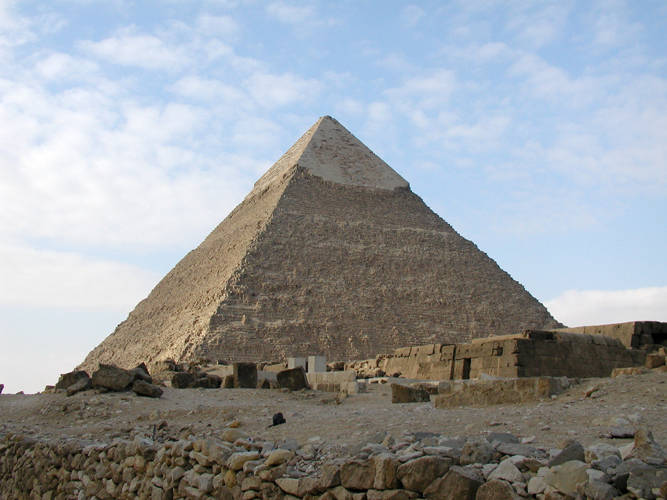

Pyramid
A pyramid is a 3D geometric solid with a polygon base (square, triangle, or polygon) and triangular sides that converge at a top point called the apex. Famous ancient Egyptian pyramids, like Giza, were built as royal tombs over 4,500 years ago, characterized by square bases and triangular faces.
Read More
Mount Sinai
Mount Sinai (Jabal Musa) in Egypt's Sinai Peninsula is a sacred site where Moses received the Ten Commandments, making it pivotal for Judaism, Christianity, and Islam. Also home to St. Catherine's Monastery, this religiously significant peak attracts pilgrims and hikers to experience biblical history and ancient landscapes, despite being surrounded by higher peaks.
Read More
Pyramid
Mount Everest, located in the Himalayas on the Nepal-Tibet border, is Earth's highest mountain above sea level at 8,848.86 meters. First summited in 1953 by Tenzing Norgay and Edmund Hillary, it is a premier destination for mountaineers, despite dangerous conditions, including the "death zone," extreme cold, and high winds. Mount Everest, located in the Himalayas on the Nepal-Tibet border, is Earth's highest mountain above sea level at 8,848.86 meters. First summited in 1953 by Tenzing Norgay and Edmund Hillary, it is a premier destination for mountaineers, despite dangerous conditions, including the "death zone," extreme cold, and high winds.
Read More